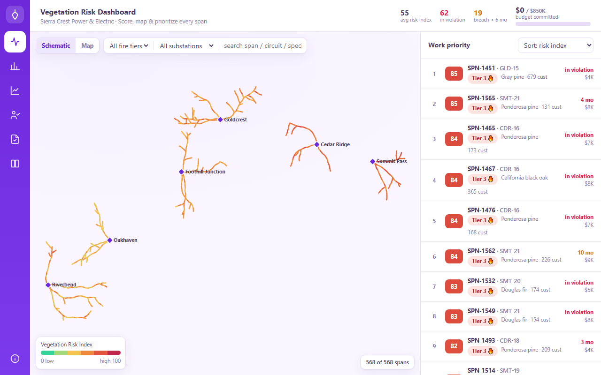

Geospatial · Utilities
Meridian
Condition-based vegetation risk intelligence for electric utilities.
▶ About
A decision-support dashboard that scores and ranks every span of a utility's network for vegetation-driven wildfire and outage risk. Combines a Vegetation Risk Index, an interactive map and one-line schematic, California fire-tier data, and a budget optimizer that prioritizes the highest-risk spans within a fixed trim budget. Offline-capable PWA built on synthetic data.